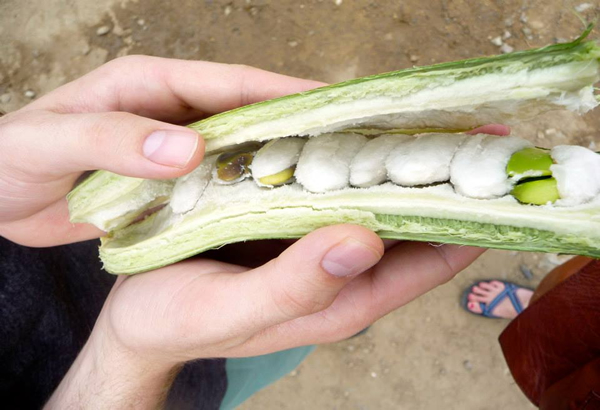
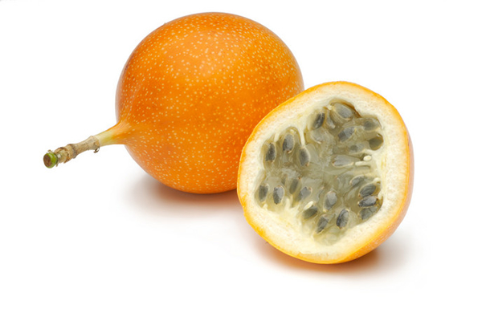

A List of Fruits Native to Peru
| Guaba |
| This fruit looks like a giant pea pod. You will see street vendors of Lambayeque selling them, and it is safe to buy from them as long as you make sure they break it open for you before you buy it (to ensure that there aren't any bugs inside). The guaba is eaten by breaking it open, eating the sweet white part, and leaving the seeds and the outer skin. |

| Guanabana |
| This fruit is in season in July and August. It’s exterior is green with a spiky looking texture, and its interior is white. It can be eaten fresh but is most commonly used for beverages and ice cream. To eat it, just cut it into slices and eat the white part of the fruit. Don’t eat the green skin or the black seeds. |
| Maracuyá |
| The Maracuyá is known as a passion-fruit in English-speaking countries. It can be eaten fresh, but it has a very tart flavor. You know it is ripe when the outer skin becomes wrinkled– at that point it is ready to make fresh juices and desserts. If you want to eat the fruit fresh, you can make an opening in the fruit and suck out the seeds and fruit on the inside. If you want to try a less tart version of the maracuyá, the granadilla is a similar fruit. |
| Granadilla |
| This is an orange-colored, oval-shaped fruit that is about the size of a tennis ball. It is very similar to passion-fruit (or maracuya), but not quite as tart. In order to eat this fruit fresh you make an opening in the fruit and suck out the seeds and fruit on the inside. Recommendation: don't chew the seeds, just swallow them. |

| Lúcuma |
| This is a tropical fruit that has been a staple of the Peruvian people since ancient times due to it's high nutritional content. It has a very unique taste– some say it tastes like pumpkin, and some say it tastes like caramel. Not many people eat this fruit raw, though it's taste is used to flavor many desserts in Peru, the most common being ice cream. |